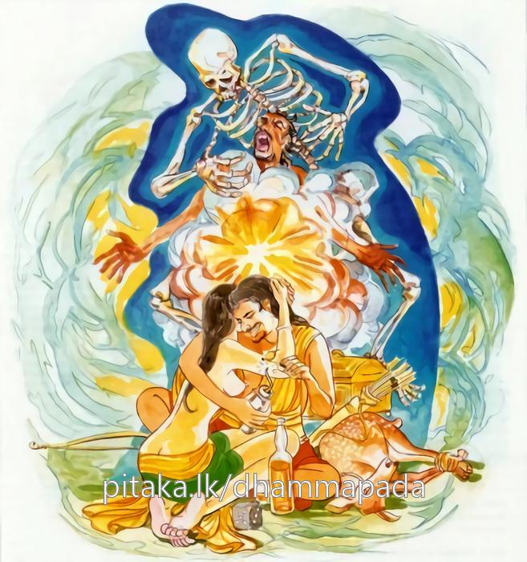

5-7 සත්වන සුප්පබුද්ධකුෂ්ටියාගේ වස්තුවයි.
මෙම කතාව සද්ධර්ම සාගරයෙන් ද කියවන්න.
චරන්ති බාලා දුම්මෙධා අමිත්තෙනෙව අත්තනා
කරොන්තා පාපකං කම්මං යං හොති කටුකප්ඵලං.
මෙලෝ පරලෝ වැඩ අවැඩ නොදන්නාවූ බාලයෝ, යම් කර්මයක් දුක් විපාක උපදවන්නේ ද, එ බඳු පාපකර්ම කරමින් තමන්හට සතුරකු වැනි වූ ආත්මයෙන් යුක්ත ව කල් යවති.

චරන්ති බාලා දුම්මෙධා යන මේ ධර්මදේශනාව ශාස්තෘන්වහන්සේ වේළුවන විහාරයෙහි වාසයකරන කාලයෙහි සුප්පබුද්ධකුට්ඨි නමැත්තා අරභයා දේශනා කළසේක. සුප්පබුද්ධ වස්තුව උදාන පාළියෙහි එන කථාවමය.
මේ කියන දිනයෙහි පිරිස් කෙළවර සිට බුදුන්ගේ බණ අසා සෝවාන් ඵලයට පැමිණ තමන් ලැබූ ඒ උසස් ගුණය බුදුන්ට දන්වනු කැමතිව පිරිස මැදින් රිංගා යනු නොහැකිව මහාජනයා බුදුන් වැඳ පසුගමන්කොට නැවතුණුපසු විහාරයට ගියේය. එකෙණෙහි ශක්රදිව්යරාජයා මේ සුප්රබුද්ධකුෂ්ටියා තමා බුදුසසුන්හි ලැබූ ගුණ ප්රකටකරනු කැමැත්තේයයි දැන ඔහු විමසාබලන්නෙමියි ගොස් අහසෙයි සිටම මෙසේ කීය. සුප්රබුද්ධය, ඔබ මිනිස් දිළින්දෙකි, මිනිස් දීනයෙකි. මම ඔබට අප්රමාණ ධනය දෙන්නෙමි. ඔබ, බුදුන් බුද්ධ නොවෙයි. ධර්මය ධර්මය නොවෙයි. සංඝයා සංඝයා නොවෙයි. මට බුදුන්ගෙන් වැඩක් නැත. මට ධර්මයෙන් වැඩක් නැත. මට සංඝයාගෙන් වැඩක් නැතැයි කියවයි කීය. ඉන්පසු ශක්රයාට සුප්රබුද්ධ මෙසේ කීවේය.
ඔබ කවුද? මම ශක්රයා වෙමි. අන්ධබාල, විලිලජ්ජානැති තෝ මා සමග කථා කිරීමට පවා නොහොබින්නෙකි. තෝ මා දුගියෙකි, දිළින්දෙකි ආදිය කියයි. එහෙත් මා එසේ නොවෙයි. මම මහත් ධනසැපතට පැමිණියෙක්මි. මම දුගියෙක් හෝ දිළින්දෙක් නොවෙමියි කියා,
සැදැහැ ධන සීලධන හිරිඔතප් නමැති ධන
සුත ධනද ත්යාග ධන පැණ යනුවෙන්ය සත්දන
යම් ගැහැණියකට හෝ පිරිමියෙකුට මෙධන ඇත්නම්
නොසිස් දිවිඇති ඔහු දිළිඳෙකු නොවේ කිසිවිට
මට මේ සප්තවිධ ආර්යධන ඇත. මේ ධන ඇත්තෙකු බුදුවරු පසේබුදුවරු දිළින්දෙකැයි නොකියති. ශක්රයා ඔහුගේ කථාව අසා ඔහු අතරමග හැරදමා බුදුන් හමුවට ගොස් ඒ සියලු වචන හා ප්රතිවචන දන්වා සිටියේය. ඉන්පසු භාග්යවතුන්වහන්සේ, ශක්රය එබඳු සියගණනින් දහස්ගණනින් හෝ සුප්රබුද්ධකුෂ්ටි ලවා බුදුන් බුදුන් නොවේ දහම දහම නොවේ සංඝයා සංඝයා නොවේයයි කියවන්නට නොහැක්කේමය. සුප්රබුද්ධකුෂ්ටිද බුදුන් හමුවට ගොස් ශාස්තෘන්වහන්සේ සමග පිළිසඳර කථාකොට සතුටුවෙමින් තමන්ලැබූ ගුණ දන්වා අසුනින් නැගිට ගියේය.
ඔහු එතනින් පිටත්වී ටිකවේලාවකින් අලුත වැදූ දෙනක් පැමිණ ඇන ඔහුගේ දිවි තොර කළාය. ඈ වනාහි එක් යකිනියකි. පුක්කුසාති කුලපුත්, බාහිය දාරුචීරිය, තම්බදාඨිකචෝර ඝාතක, සුප්පබුද්ධකුට්ඨි යන මේ සතරදෙනා අවුරුදු සීයක් බැගින් මේ යකින්න දෙනක්වී ජීවිතයෙන් තොරකළාය. ඔවුහු අතීතයෙහි සිටුපුතුන් සිව්දෙනකුවී එක් නගර ශෝභිනියක් ගණිකා උයනකට කැඳවාගෙන ගොස් දවසක්පුරා ඈ සමග කාමයෙහි හැසිරී සවස් වේලෙහි, මෙහි අන් කිසිවෙක් නැත. මෑට අප දුන් කහවණු දහසත් සියලු පළඳනාත් ගෙන මැ මරා යමුයයි කතිකා කළහ. ඈ ඔවුන්ගේ කතාව අසා සිට, මොවුහු ලැජ්ජා නැත්තෝය. මා සමග අභිරමණය කොට දැන් මා මරණු කැමැත්තාහුය. මොවුන්ට කළයුත්ත දන්නෙමියි ඈ මරන අවස්ථාවේ මම යකිනියක්ව අද මොවුන් මා මරන්නාක් මෙන් මමත් එසේම මොවුන් මැරීමට සමර්ථ වෙම්වායි ප්රාර්ථනා කළාය. ඒ ප්රාර්ථනා හේතුවෙන් මොවුන් මැරුවාය.
බොහෝ භික්ෂූහු ගොස් සුප්පබුද්ධකුට්ඨිගේ මරණය පිළිබඳ පුවත භාග්යවතුන්වහන්සේට දන්වා ඔහු උපන්නේ කොහිද? කිනම් කරුණකින් කුෂ්ට ඇතිවීදැයි විචාළහ. ශාස්තෘන්වහන්සේ සෝවාන්ඵලයට පැමිණි ඔහු තව්තිසාවේ උපන්බවත්, තගරසිඛී නම් පසේබුදුන් දැක කෙළගසා අපහාසකොට බොහෝ කල් නිරයේ පැසී එහි ඉතිරි විපාක වශයෙන් මෙකල කුෂ්ඨියෙක් වූ බවද ප්රකාශකොට, මහණෙනි, මේ සත්ත්වයෝ තමන්ම තමන්ට කටුක විපාක ඇති පව්කම් කරමින් හැසිරෙතියි කියා පූර්වාපර සන්ධි ගළපා තවදුරටත් දහම් දෙසමින් මේ ගාථාව වදාළහ:
අනුවණ දනෝ මෙහි පව්කම් කරන අත්බව
මිතුරෙක සේ ගෙන යති එය කටුක දුක් ගෙනදෙයි
එහි චරන්ති යනු සතර ඉරියව්වෙන්ම පව්කම්ම කරමින් හැසිරෙත් යන අර්ථයි. බාලා යනු මෙලෝ යහපත පරලෝ යහපත නොදන්නාහු බාලයෝය. දුම්මෙධා යනු ප්රඥාවෙන් හීනයෝයි. අමිත්තෙනෙව යනු හතුරෙක් මෙන්වී වෛරියෙක් මෙන්වී යනුයි. කටුකප්ඵලං යනු තියුණුදුක් නැමැති ඵලයෝයි.
දේශනාවසානයෙහි බොහෝ දෙනා සෝවාන් ආදි ඵලවලට පැමිණියාහුය.